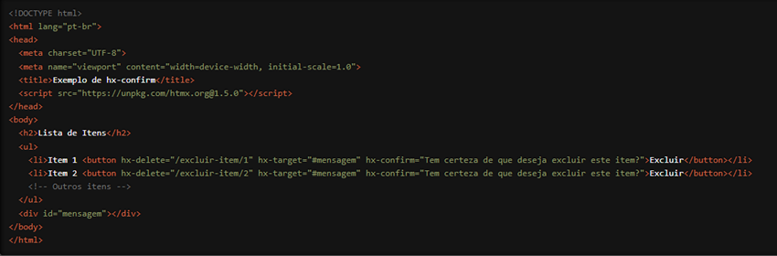

Estamos empolgados em apresentar uma funcionalidade que adiciona uma camada extra de interação e segurança às suas aplicações web: o atributo `hx-confirm` do HTMX. Com `hx-confirm`, você pode exibir uma mensagem de confirmação antes de realizar uma requisição HTTP, garantindo que os usuários estejam cientes das ações que estão prestes a realizar. Vamos explorar como essa funcionalidade pode elevar o nível das suas aplicações web.
O que é o atributo `hx-confirm`?
O `hx-confirm` é um atributo do HTMX que permite exibir uma mensagem de confirmação ao usuário
antes de enviar uma requisição HTTP. Isso é especialmente útil para ações críticas, como exclusões
de dados, onde você deseja que o usuário confirme sua intenção antes de prosseguir. Se o usuário
confirmar a ação, a requisição é enviada; caso contrário, a ação é cancelada.
Como Funciona?
Vamos ver um exemplo prático para entender melhor como o `hx-confirm` pode ser usado. Suponha
que você tenha um botão para excluir um item e deseja que o usuário confirme a ação antes de ela
ser realizada:

Neste exemplo, quando o usuário clica no botão "Excluir" para qualquer item, uma mensagem de confirmação "Tem certeza de que deseja excluir este item?" é exibida graças ao atributo `hx- confirm`. Se o usuário confirmar a ação, a requisição HTTP DELETE é enviada para a URL correspondente ("/excluir-item/1" ou "/excluir-item/2"), e a resposta é exibida no `div` com id "mensagem". Se o usuário cancelar a ação, a requisição não é enviada.